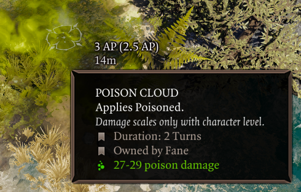

Tooltip Adjustments¶
Numerous fixes and additions have been made to tooltips to improve their clarity. Some of these may be toggled off from the Tooltips tab in the settings menu.
General¶
- Delay for simple tooltips appearing is customizable in the settings menu.
- Skill tooltips now account for effects that increase or decrease AP costs.
- Status tooltips show who applied the status (if anyone), as well as whether the status comes from an equipped item.
- Deltamods that previously did not show clearly in tooltips (+range, +elemental damage) now have blue labels in tooltips, like others.
- Holding shift will cause skill tooltips to display damage multipliers instead. Does not work for all skills.
- Removed the skull icon introduced by GB5 that appeared on negative status effects (unlikely to have been intentional).
- Added a keybind to scroll tooltips, useful for 3-socket items whose tooltips often overflow the screen.
- Books that have been read and keys that have been used now have a green label in their tooltip.
- Long item tooltips will be top-anchored, helping with the issue of being unable to compare items while wielding a heavily upgraded item.
- Fixed cone and zone-type skill tooltips saying that their range is boosted by Astrologer's Gaze (Far-out Man in vanilla), as they are not actually affected.
- Surface tooltips now show their owner as well as a hint regarding damage scaling.
- Surface tooltips now render on top of the hotbar.
- In developer mode, statuses and skills show their IDs in their tooltips. A debug keybind exists to copy these identifiers to the clipboard.
- Active Defense statuses now show their charges and max charges.
- Holding shift in combat displays partial AP costs for movement.

EE-specific¶
- "Stat Adjustments" in tooltips are now merged into one line.
- Added a label for items that have been Masterworked.
- While infusing a spell or holding shift, skill tooltips now highlight Source Infusions you don't meet the requirements for. Holding shift also displays your relevant ability score in the tooltip.
- Most statuses that deal damage now show the calculated damage, rather than showing "(before modifiers)".
- Tooltips for randomly generated EE items now show a "quality" label, which indicates how good the damage/armor rolls were for that item. A 100% quality indicates the best roll, possibly only on divine items.
- The word "Set: " has been removed from tooltips due to confusion and redundancy.
- The damage tooltip in the character sheet has been made less confusing by removing the mention of damage from gear and dummied out LW values. Additionally, it now makes it clear that the weapon abilities grant multiplicative damage increases.
- Artifacts display with a special rarity and item color, hand-picked by the EE devs. This change has been made available in the base EE mod as well. Additionally, artifact runes now show a "Cannot equip." warning for slots that they are incompatible with.
- Added a hint in the quest rewards screen which explains that deltamods are only generated after picking the item.
- EE rune crafting materials now have a hint explaining their usage.